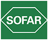

|
 |
 | Препараты, представляемые СОФАР С.п.А. (Италия) | Представительство в России 121099 Москва Организация, принимающая претензии потребителей АРГУМЕНТУМ ООО (Россия) 121471 Москва |
| Торговое название | КФГ | Владелец рег. удостоверения |
| ДАМОРЕ (DHAMORE) капсулы | БАД - источник пробиотических бифидобактерий, омега-3 жирных кислот и витаминов | зарегистрировано |
| ЦИСТИФЛЮКС ПЛЮС (CISTIFLUX PLUS) порошок | БАД - дополнительный источник проантоцианидинов клюквы и D-маннозы | зарегистрировано |
| ЭНТЕРОЛАКТИС ФИБРА (ENTEROLACTIS® FIBRA) сироп и капсулы с порошком | БАД - синбиотик (пробиотик + пребиотик) | зарегистрировано |
Представленная информация предназначена для врачей и работников здравоохранения. Издательство не несет ответственности за возможные отрицательные последствия, возникшие в результате неправильного использования представленной информации.
Copyright © Справочник Видаль «Лекарственные препараты в России», Москва, Россия
Copyright © Справочник Видаль «Лекарственные препараты в России», Москва, Россия